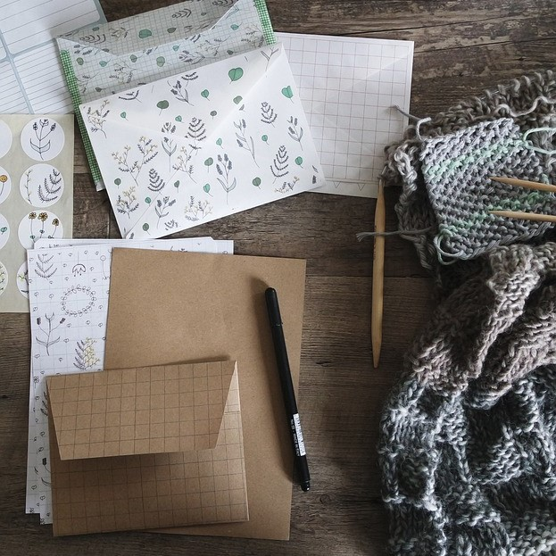
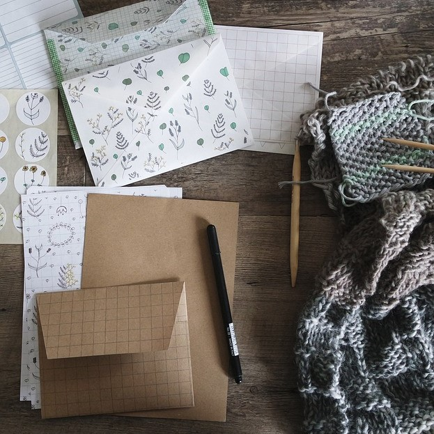

Home
Crafting is a great way to have fun and create. It is one of my favorite things to do. When I craft, I can forget about everyday life and dive into creativity and imagination. There are many types of crafts, and anyone can be good at one thing or another or both or all. It is up to you! My go to crafting includes crochet, painting, card making, and wall art.
Crochet is a fun way to create cozy and unique items. With just a hook and some yarn, you can make anything from doilies to blankets. It’s enjoyable to watch the pattern come together stitch by stitch.
Painting is another wonderful craft. You can express yourself with colors and shapes. Whether it’s a colorful sunset or a silly cartoon, each painting tells a story. Plus, it’s exciting to experiment with different techniques and styles!
Card making is perfect for special occasions. You can design personalized cards for birthdays, holidays, or just to say, "thank you." Adding your own touch makes the card even more special for the person receiving it.
Wall art is a great way to brighten up your space. You can create beautiful pieces to hang up or you can even stick them to the wall. From paintings to Cricut crafting with vinyl, wall art showcases your unique style.
Crafting is more than just making things; it’s a way to express yourself and share joy with others. It also can be a way to decompress and just have fun!